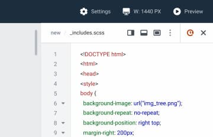

<section class="tech" id="tech">
    <div class="tech__wrapper">
        <div class="tech__title-wrapper">
            <h2 class="tech__title section__title">Technologies</h2>
            <p class="tech__title-description">AGORA is implemented using standard approaches to the development of the
                server and client parts of enterprise solutions.</p>
            <a href="#" class="read-more__btn">Read More</a>
        </div>
        <div class="tech__content">
            <p><strong>JavaScript is the main programming language</strong> and is used by most of the front-end and
                back-end components.
                However, individual components of the solution can also use other programming languages. For example,
                GeoCMS uses GeoServer, an application written in Java, to serve maps, while other GeoCMS functional
                modules are implemented in JavaScript.</p>
            <p>The use of JavaScript as the main programming language provides <strong> affordable support and
                development</strong> of the
                platform due to the availability of a wide range of libraries, as well as qualified specialists with the
                necessary technology stack to work with them.</p>
            <p>Application development uses open-source technologies. This approach allows us to implement solutions in
                accordance with modern trends in the field of IT while solving complex technological problems.
                Open-source technologies allow an organization or company to <strong> save resources on maintaining and
                developing implemented solutions based on AGORA </strong> and are one of the factors that ensure a high ROI of
                projects in which the solution is involved.</p>
        </div>
        <div class="tech__img-wrapper">
            
        </div>

    </div>
</section>